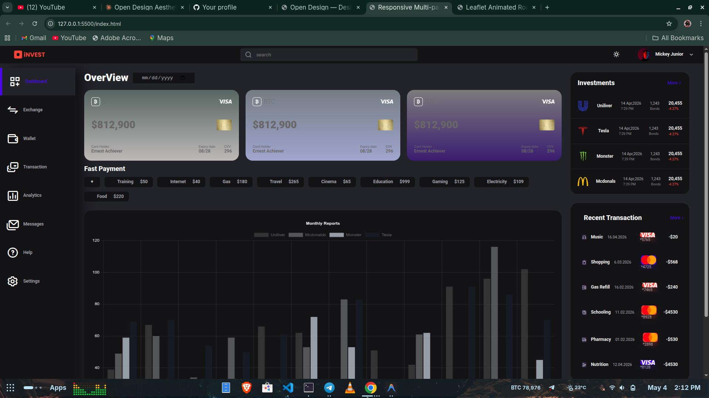
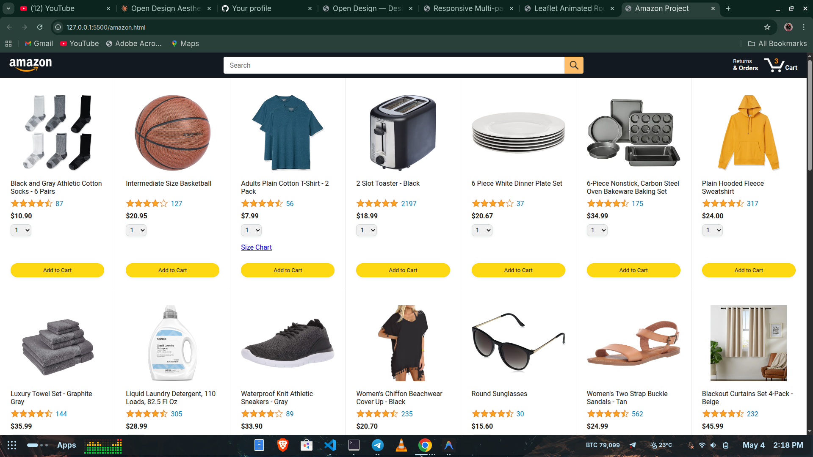
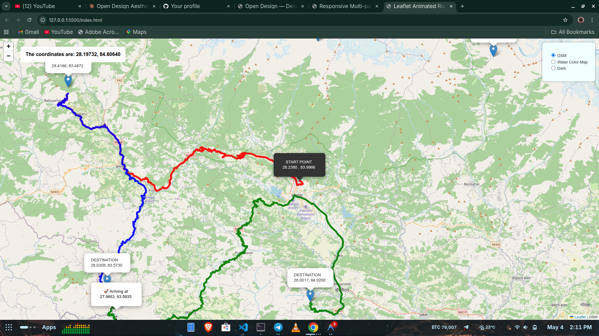
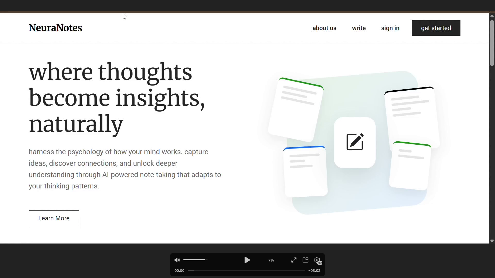

MAY 2026
Self-Awareness & Existence
"We are not the reason for the existence of the universe, but our ability for self-awareness and reflection makes us special within it." - Mickey Jr
CONTINUE READING 2 MIN READ
I'm Mickey Jr, aka Coderastrophy (he/him) — a developer based in Ethiopia
building things for the web with curiosity, precision, and a philosophical edge.A 3rd year Computer
Science and
Engineering student at Adama Science and Technology University, building a foundation around software
development, systems thinking, and continuous learning.
I approach everything with depth and intention — from code to film, music, football, and ideas. Rather than
surface-level consumption, I tend to study structure, context, and evolution: directors behind films, eras
behind football clubs, and ideas behind global systems. This same mindset carries into how I learn technology,
favoring long-form resources and conceptual understanding over shortcuts.
As a developer, I am focused on growing from fundamentals into building meaningful, well-structured systems.
“Coderastrophy"reflects my experimental and builder mindset in programming, while my broader
interests in
culture, philosophy, and geopolitics reflect a curiosity about how systems shape both technology and society.
Outside of academics, I share thoughts and reflections through my Telegram channel, blending perspectives on
tech, culture, and ideas.
Full-stack web applications across 9 repositories ranging from Amazon-style e-commerce clones to crypto dashboards and map-driven applications.Each project is built with a focus on real-world structure, not just surface-level UI copies. Work is entirely commit-driven, reflecting iterative development, problem-solving, and continuous improvement rather than rushed or artificial completion. Every repository represents a learning cycle — from architecture and logic design to deployment-level thinking — with an emphasis on clarity, scalability, and functional depth over noise or filler code.
"We are not the reason for the existence of the universe, but our ability for self-awareness and reflection makes us special within it." -Mickey Jr
This reflects how I see existence and human potential. The universe does not revolve around us, nor does our existence require some predetermined cosmic purpose to matter. What makes us remarkable is our ability to observe, question, reflect, and create meaning through awareness itself. To me, that capacity for conscious thought is what gives value to our presence — not because we are the center of existence, but because we are among the few known parts of it capable of understanding and interpreting it. That perspective shapes how I approach both life and technology: with curiosity, humility, and a constant drive to understand systems more deeply.




My thoughts about the Music,Cinema, Philosophy and life in general.
"We are not the reason for the existence of the universe, but our ability for self-awareness and reflection makes us special within it." - Mickey Jr
CONTINUE READING 2 MIN READI stand between two quiet pulls, each asking for a different kind of surrender. One is the hard road, believing that somewhere ahead it will all make sense...
CONTINUE READING 4 MIN READI think I have lost the interest to nerd out, compete and assert dominance and the overall momentum I've had for long years...
CONTINUE READING 3 MIN READThe fear is quiet but constant. "What if I end up unemployed?" "What if I don’t figure it out in time?"...
CONTINUE READING 3 MIN READI used to make good money online sometimes more than I thought I ever would. Now I’m at zero. This is the harsh reality no one talks about...
CONTINUE READING 4 MIN READThe one time you finally get inspired to lock in and focus, and then your telecom provider blesses you with the worst possible network...
CONTINUE READING 2 MIN READ"Be unmasked." It’s a big phrase. The kind of thing people say when they want to sound wise. But I don’t think I even qualify for it...
CONTINUE READING 3 MIN READ